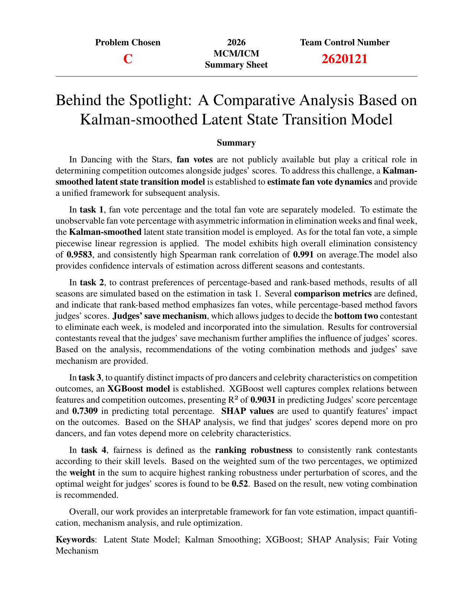
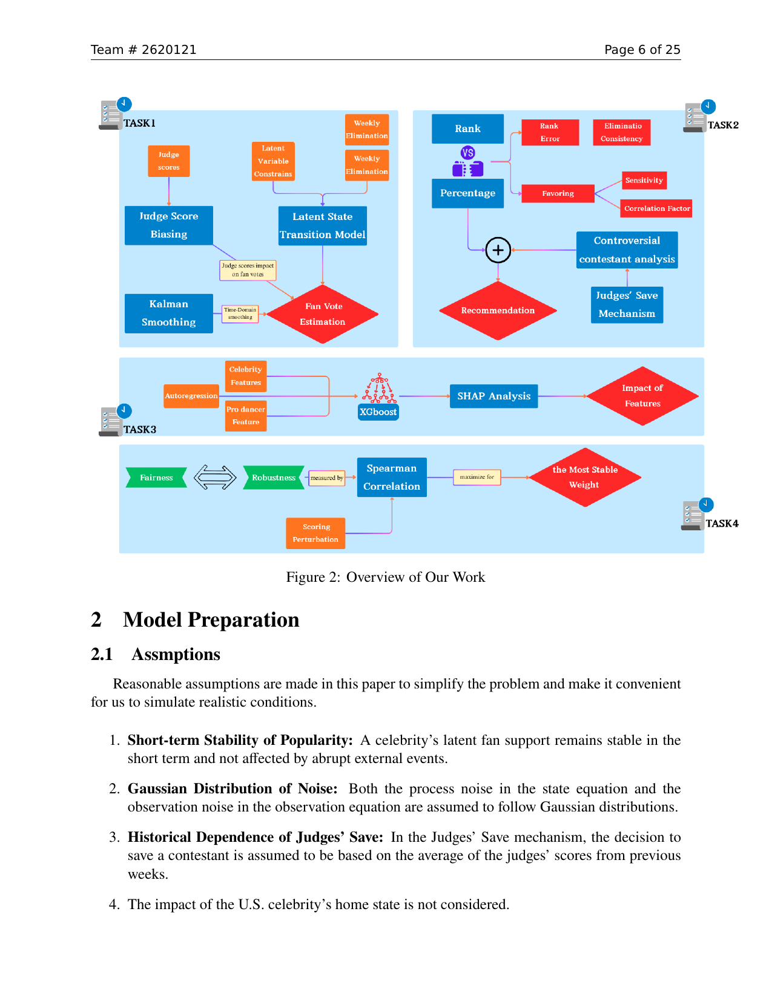
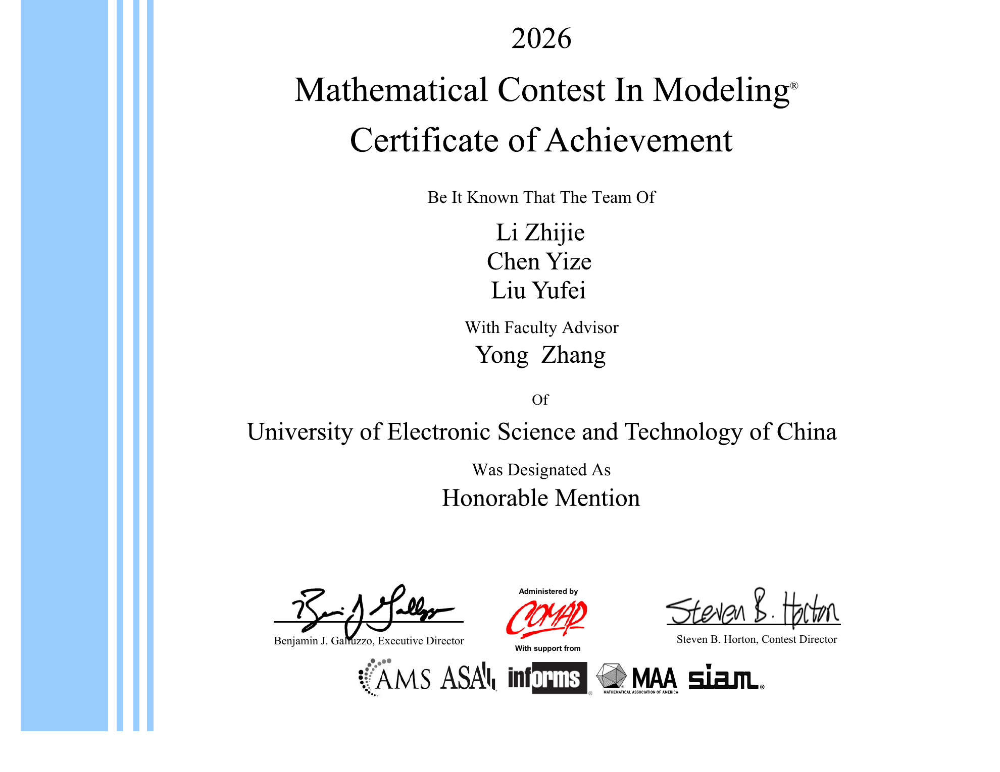
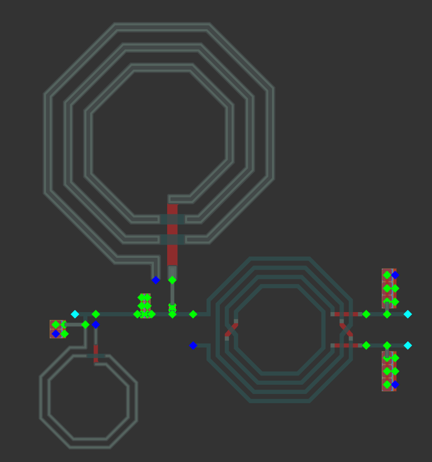
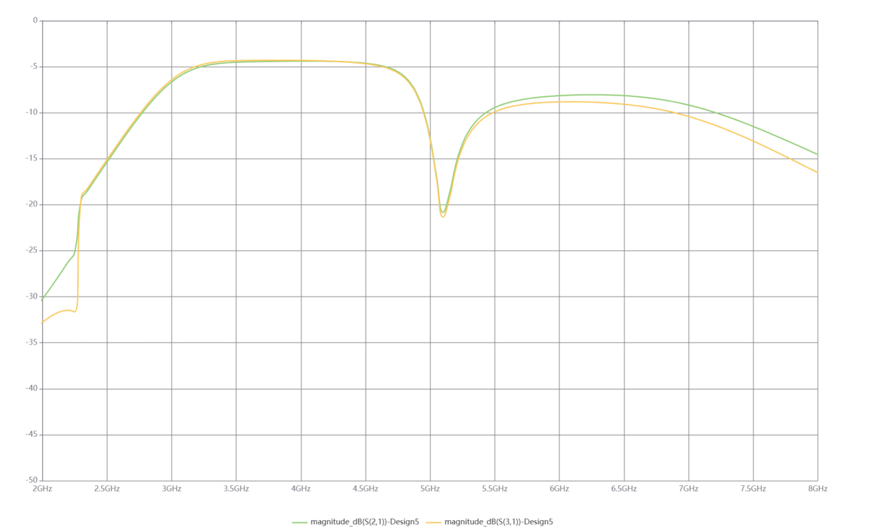
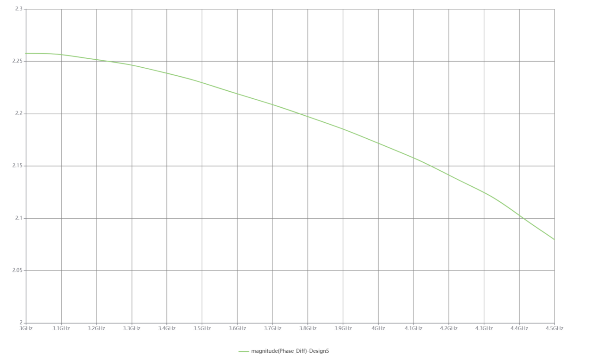

Project archive for competition work and technical practice.
This page collects work that sits outside ordinary coursework: modeling competitions, IC design competitions,
project writeups, selected figures, certificates, and public-facing technical summaries.
Competition work and technical projects that sit outside ordinary coursework.
MCM/ICM 2026
Mathematical Contest in Modeling: voting dynamics and fairness analysis
For MCM/ICM Problem C, Team 2620121 wrote "Behind the Spotlight: A Comparative Analysis Based on
Kalman-smoothed Latent State Transition Model," a paper on fan-vote dynamics, voting-combination mechanisms,
and feature interpretation with XGBoost and SHAP. I contributed most of the modeling ideas and overall
analytical structure, and I was responsible for the full paper writing and final polishing. The team received
Honorable Mention.

Summary sheet and model overview

Workflow and model-preparation page

Honorable Mention certificate
集创赛 / 法动杯
AI辅助5G滤波巴伦及封装设计
For the 10th National College Student Integrated Circuit Innovation and Entrepreneurship Competition,
our team CICC1003635, "做的全都对," submitted the 法动杯 preliminary technical report
"面向5G射频前端的智能滤波巴伦芯片建模与封装协同设计" and advanced to the regional final. The project targets
5G Sub-6GHz RF front ends with an IPD-based compact wideband filtering balun, combining transformer
coupling with a Chebyshev bandpass network to integrate single-ended-to-differential conversion,
impedance transformation, and out-of-band suppression in one chip-level passive structure. The design
used EMOptimizer for AI/FCell-driven parameter optimization and UltraEM for 3D full-wave electromagnetic
validation, reaching a 0.9 mm2 layout area with roughly 4.4 dB in-band insertion loss, return loss better
than 15 dB, strong 2.0 GHz and 5.0 GHz stopband rejection, and tightly controlled amplitude and phase
imbalance across the 3.0-4.5 GHz operating band.

EMOptimizer physical layout

UltraEM S21 and S31 validation

UltraEM phase-balance result
Evidence Library
Public-facing assets currently attached to project records.
MCM/ICM
Paper visuals
The project gallery currently uses curated screenshots from the paper summary, workflow page,
and certificate. Additional figures, such as SHAP interpretation, can be added when the layout is ready.
Contribution
Personal role
For the MCM/ICM project, the record highlights modeling ideas, analytical structure, full paper writing,
final polishing, and team award outcome.
CICC
Preliminary report outcome
The 法动杯 technical document records the team's preliminary design, simulation flow,
tool comparison, and final performance summary. The project has advanced from the preliminary round
to the regional final; cleaned figures and presentation images can be added here later.
Update Log
A lightweight record of how the site evolves.
2026-06-28
Separated projects into their own detail page so the homepage can stay as a concise navigation hub.
Next
Add cleaned IC competition figures and optional MCM SHAP evidence when those materials are ready.